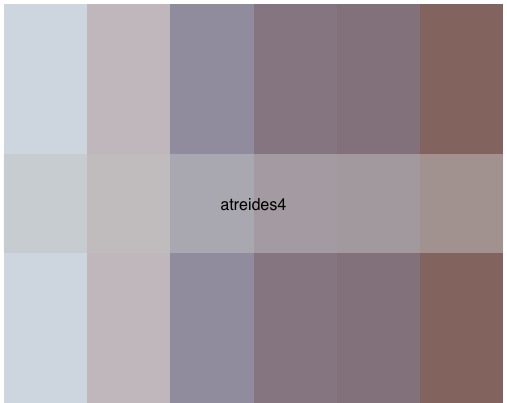

Introducing {Rdune}
By Nicholas Vietto
July 2, 2024
Want to add some ‘spice’ to your {ggplot2} data visualizations? You’re in the right place! I’m excited to introduce {Rdune}, a collection of 15 color palettes inspired by ‘Dune’.

Image: giphy.com
How to install and load
Currently, only the developmental version of {Rdune} is available on GitHub. If you’re unfamiliar with how to download a developmental version of an R library, simply follow these steps:
- Install {devtools}
install.packages("devtools")
- Load {devtools}
library(devtools)
- Install {Rdune} from GitHub
devtools::install_github("nvietto/Rdune")
- Load {Rdune}
library(Rdune)
Now that {Rdune} is installed, you can load it like any other R library in the future using library(Rdune).
Functions
Here are the key functions used in {Rdune}:
-
names(dune_palettes)
- Prints the names of all 15 palettes currently available.
-
print.palette()
- Displays the colors of a palette.
- Note: The palette must be assigned to an object to print colors properly (I’m working on improving this).
-
{ggplot2} functions:
(Note: be sure to add " " around the palette name)- scale_fill_dune_d()
- Applies a discrete {Rdune} palette to the fill aesthetic in ggplot2.
- scale_fill_dune_c()
- Applies a continuous {Rdune} palette to the fill aesthetic in ggplot2.
- scale_color_dune_d()
- Applies a discrete {Rdune} palette to the color aesthetic in ggplot2.
- scale_color_dune_c()
- Applies a continuous {Rdune} palette to the color aesthetic in ggplot2.
- scale_fill_dune_d()
Examples
names(dune_palettes)

pal <- dune_palette("atreides4")
print.palette(pal)

You can view the inspiration for this palette below. (Note: You can find the inspiration for all the palettes at the GitHub repo).

Now lets add this palette to a {ggplot2} plot using scale_color_dune_c():
library(ggplot2)
ggplot(data.frame(x = rnorm(10000), y = rnorm(10000)),
mapping = aes(x = x, y = y)) +
geom_hex() +
scale_fill_dune_c(name = "atreides4")

Let’s try a scale_fill_dune_d():
ggplot(
data = iris,
mapping = aes(x = Sepal.Length, fill = Species)) +
geom_density(alpha = 0.5) +
scale_fill_dune_d(name = "atreides4")

Final Remarks
I hope you enjoy {Rdune} as much as I do. If you would like more examples on how to use the package, feel free to download the vignette. I plan to submit it to CRAN in the upcoming weeks, so if you find any bugs or have any suggestions, please open an issue on the GitHub repo. Enjoy!

Image: giphy.com
- Posted on:
- July 2, 2024
- Length:
- 2 minute read, 350 words
- See Also: